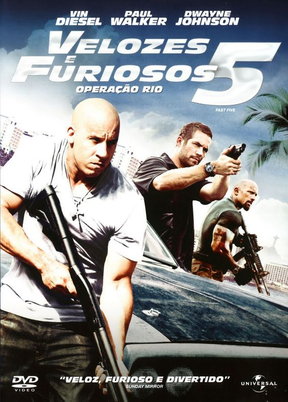

|  | Velozes e Furiosos 5: Operação Rio
Direção: Justin Lin
Roteiro Gary Scott Thompson, Chris Morgan
Elenco: Vin Diesel, Paul Walker, Dwayne Johnson
Desde que o ex-policial Brian O'Conner e Mia Toretto libertaram Dom da prisão, eles viajam pelo mundo para fugir das autoridades. No Rio de Janeiro, eles são obrigados a fazer um último trabalho antes de ganhar sua liberdade definitiva. Brian e Dom montam uma equipe de elite de pilotos de carro para executar a tarefa, mas precisam enfrentar um empresário corrupto e um obstinado agente federal norte-americano. |
|
Acesse mais em YouTube SESSÕES
|